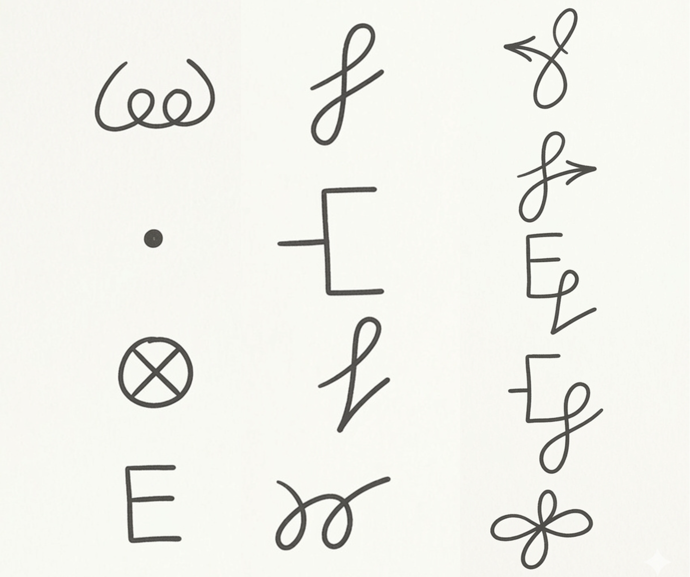

Short daily rituals that maintain your energy field, protect you from accumulating foreign energies, and keep your healing momentum going.

You will use the 13 Transformations in this protocol — imagine each symbol in sequence in the white light around your body. Full reference with explanations →
These steps form the foundation of every session. With practice, they take less than 2 minutes and become second nature.
Choose a quiet place where you won't be disturbed. Sitting or lying — whatever feels most natural. You don't need special equipment, music, or props. Intention and attention are the tools.
Take 3–5 slow breaths. Let the mental noise settle. You don't need to reach a perfect meditative state — just a slight pause from autopilot. This creates the inner space for the work.
Imagine a bright white sun in your heart. Breathe it larger. Fill your body completely. Then expand outward — to the size of the room, the house. Hold this field throughout your practice.
Before you start, state clearly (out loud or internally) what you're working on today. The more specific, the better. Your subconscious and your energy body respond to clear, directed intention.
A complete daily reset — takes 5–10 minutes. Best done in the morning or evening, but any time works.
Use this whenever you feel energetically attacked, overwhelmed, or after any intense interaction. It can be done in seconds once you practice it.
Remember how it feels when you finally make an important decision — "Do I accept this job offer or not? Should I get married?" When you finally decide, you feel a kind of relief and completeness. A weight lifts.
This is the feeling you're looking for when you give an energetic command. Not forcing — deciding. The moment you feel that click of resolution, the order is complete.
If you can't feel anything — try the Release Numbness exercise first to reconnect your emotional body.
Daily Healing Meditation. Set your intention for the day. Ground before getting up.
Quick self-protection before charged situations. Clear energy templates after difficult interactions. Notice emotions without acting them out.
Clear all templates from the day. Energy bond maintenance. Gratitude practice. Ground before sleep.